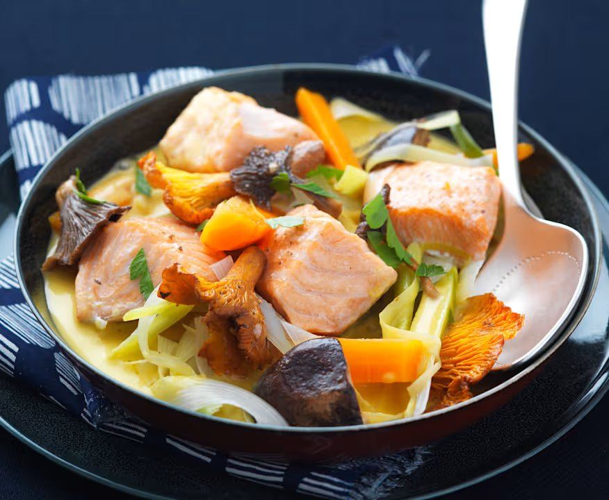

Blanquette de saumon aux champignons des bois
Ingrédients
- 300 g de carottes
- 200 g de blancs de poireau
- 500 g d'eau
- 1 cube de bouillon de légumes
- 600 g de saumon frais
- sel
- poivre
- 25 g de farine
- 50 g de crème liquide
- 400 g de champignons des bois
- 25 g de beurre demi-sel

Préparation
Étape 1
Couper 300 g de carottes en bâtonnets et émincer 200 g de blancs de poireau dans la longueur. Mettre 50g de carottes et 50g de poireau dans le bol et hacher 5 sec/vitesse 5.
Étape 2
Ajouter 500 g d'eau et 1 cube de bouillon de légumes. Insérer le panier cuisson avec le reste des carottes et des poireaux, puis cuire à la vapeur 15 min/Varoma/vitesse 1.
Étape 3
Pendant ce temps, couper 600 g de saumon frais en cubes de 3cm, le poser sur le plateau vapeur et l’assaisonner avec 4 pincées de sel et 3 pincées de poivre. Insérer le plateau dans le Varoma, mettre en place et cuire à la vapeur 10 min/Varoma/vitesse 1. Réserver légumes et saumon au chaud.
Étape 4
Ajouter au bouillon 25 g de farine, 50 g de crème liquide, 2 pincées de sel et 3 pincées de poivre. Mixer 20 sec/vitesse 7 puis cuire 3 min/100ºC/vitesse 2.
Étape 5
Pendant ce temps, suer 400 g de champignons des bois à la poêle dans 25 g de beurre demi-sel, avec 2 pincées de sel.
Étape 6
Napper les légumes, le saumon et les champignons de sauce et mélanger délicatement. Servir aussitôt.